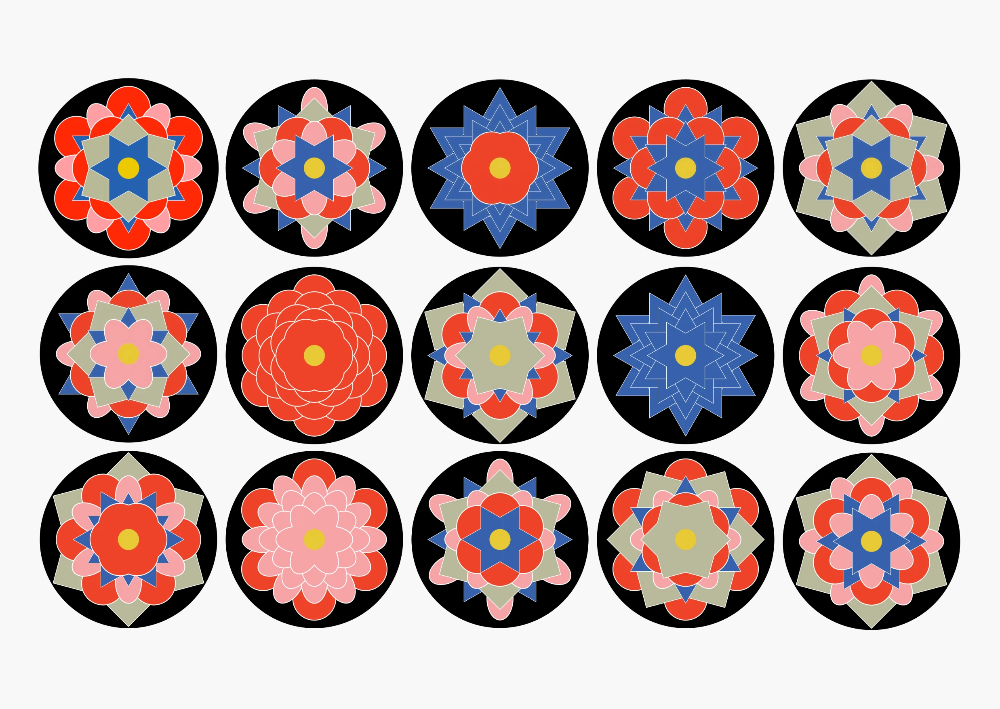
Shape of Days
Shape of Days is a web experience that translates daily reflection into a unique geometric pattern: a visual record of your day that is deeply personal, without being fully legible to others. It lowers the barrier to emotional reflection through structure, guiding people from everyday events toward how they felt during them.
01 — Problem
In this digital age, people record everything but remember very little. While 80% of people never revisit photos after the day they were taken, tools that capture context tend to lean either toward passive logging or intimidating open-ended writing, with very little in between.
The gap between lived experiences and how they are remembered widens every time feelings go undocumented. This creates an opportunity for a tool that captures emotional context in a visually cohesive and accessible way.
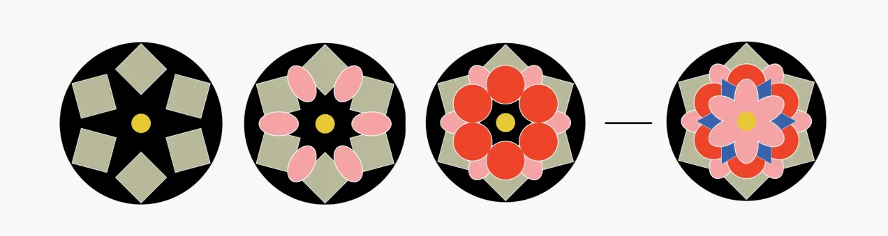
02 — Research
The project sparked from a conversation with a friend who described journaling as intimidating. Her journal often became little more than a schedule rather than a place for reflection.
Research highlighted that this barrier affected far more people than I initially assumed. Many struggled to express emotions even in private spaces, making it difficult to preserve how they felt during significant moments. Over time, this can affect memory recall, even when visual cues such as photos and videos are available.
The challenge was not only how to capture emotional context, but how to lower the barrier to getting started by turning reflection into an enjoyable, rewarding experience.
Research question
How might emotional reflection become intuitive and visually engaging without sacrificing depth?
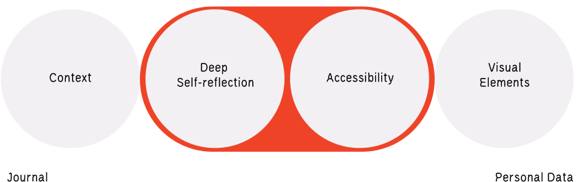
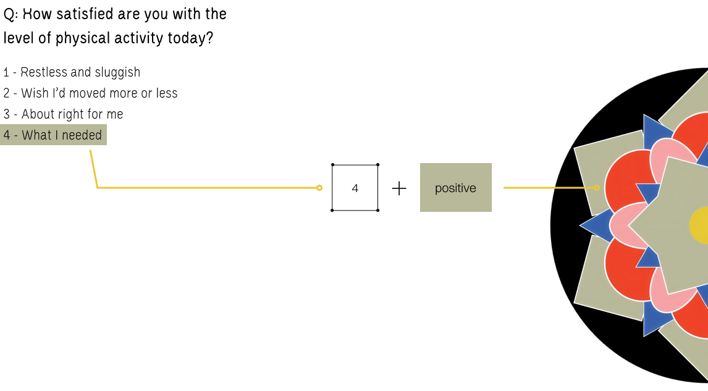
03 — Design approach
Three principles made sure the outcome addressed these pain points and answered the research question.
01
Reflection should feel safe, not exposed
Users should be able to document emotions without feeling vulnerable or pressured to reveal them.
02
Reflection should create personal meaning
The outcome should be meaningful to the creator without needing explanation to anyone else, yet visually cohesive enough to be appreciated as it is.
03
Reflection should be guided, not forced
Adequate structure supports reflection, while letting people interpret their experiences in their own way.
04 — Concept
Shape of Days approaches reflection as a process rather than a prompt. Instead of asking people to describe their emotions directly, the system builds context incrementally through a sequence of guided questions. Each answer contributes a layer to a growing visual outcome until a complete pattern emerges.
Rather than replacing traditional journaling, it acts as a stepping stone toward deeper and more sustainable reflection.
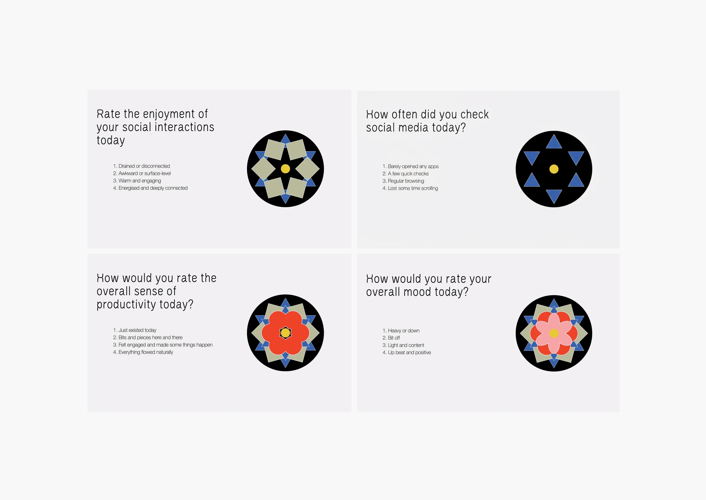
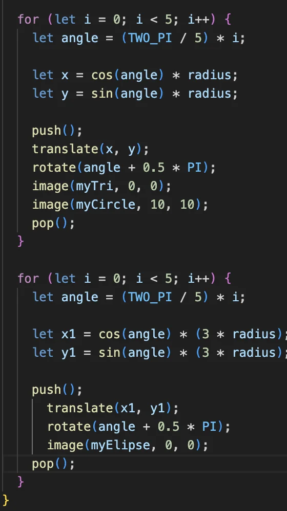
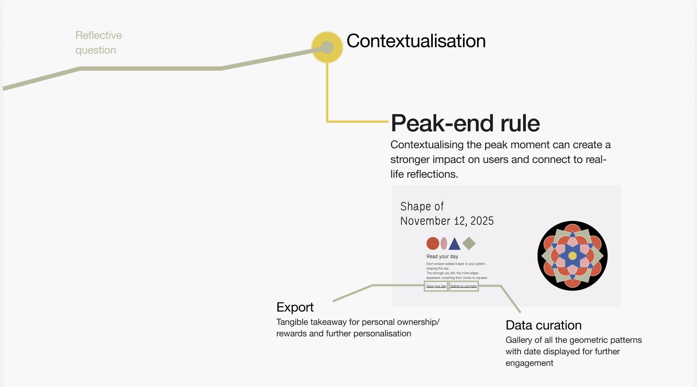
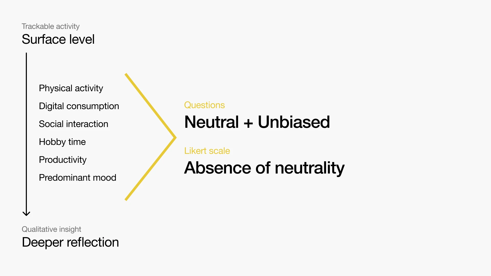
05 — Reflection system
The most critical design challenge was guiding people into emotional reflection without triggering the anxiety that often makes journaling feel overwhelming. For accessibility, I focused on areas that are relevant to everyone's daily life, easy to recall, and can be rated by intensity rather than quantity:
- 01Physical activity
- 02Digital consumption
- 03Social interaction
- 04Hobby time
- 05Productivity
- 06Predominant mood
During testing, most participants referred back to answers from earlier prompts when deciding their predominant mood. The prompts worked as interconnected steps rather than separate questions, helping people arrive at emotional reflection through recall.
Research also highlighted the importance of safety and confidentiality in self-reflection. While the flow helped people open up gradually, traditional rating scales created a disconnect in emotional language.
To address this, I adapted the Likert scale using more inclusive, neutral language and removed the traditional neutral midpoint. This encouraged participants to pause and consider their response more carefully.
06 — Visual system
The visual system is heavily influenced by Dancheong, the traditional Korean decorative painting found on architecture. As the project began from a personal interest in memory and reflection, I wanted to anchor the experience in an element of my own cultural background.
The geometric floral motifs in Dancheong originate from Buddhist mandalas, which symbolise harmony and wholeness.
Mandalas have also appeared in psychology as tools for self-reflection and self-expression. This connection gave both cultural grounding and a framework for turning emotional data into a meaningful visual record.
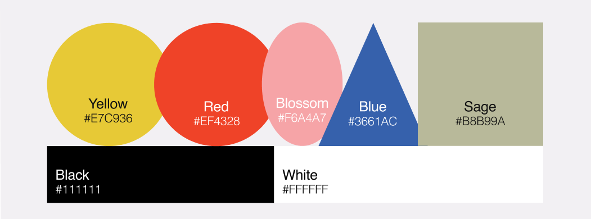
07 — Web experience
As people answer each prompt, they receive immediate visual feedback: a polygon layer that gradually builds a unified geometric pattern.
By the end of the sixth prompt, they're rewarded with a unique visualisation of their day.
The pattern can be saved to an online archive, or downloaded and remixed with other personal artefacts for further context.
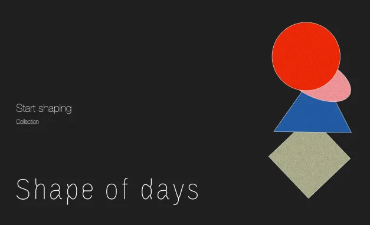
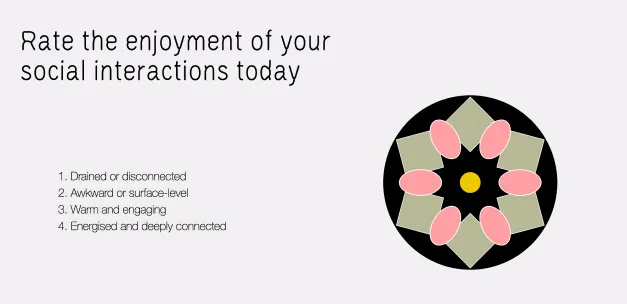
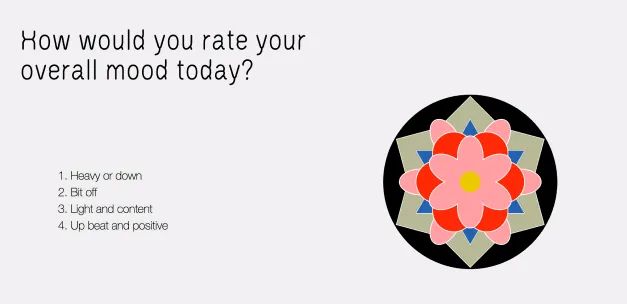
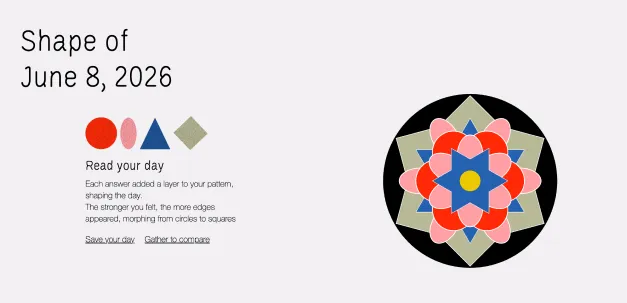